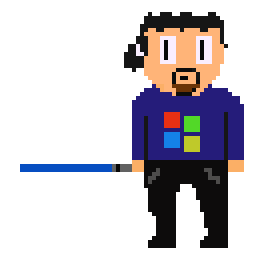
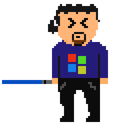

Touché !
Ah ! Parsambleu !
Rejoins Ubuntu ! Tu pourras programmer comme tu ne l'as jamais fait... Ne te laisse pas limiter par Windaube !
Jamais ! L'interface graphique de W10 est plus intuitive... et Edge est plus sûr que les autres navigateurs !
Pff... Futilités que tout cela !
 